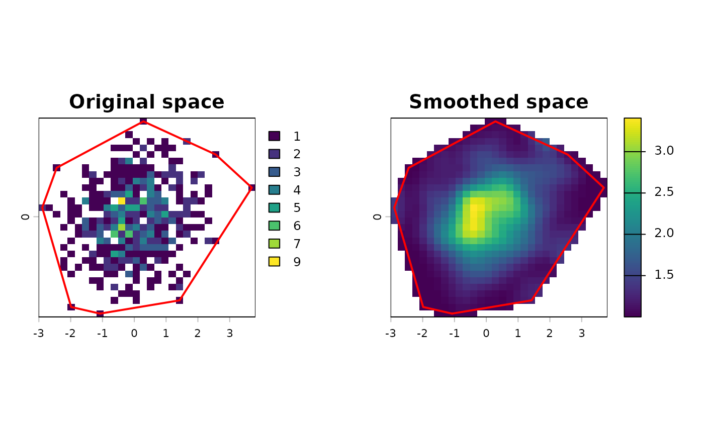

Applies Gaussian kernel regression to estimate values across a raster containing incomplete observations. It is particularly useful for exploring biodiversity patterns in environmental and attribute spaces, where observations may be sparse or irregularly distributed. Predictions can be restricted to a convex or concave hull around observed cells.
Usage
lets.smooth(
x,
plot_raster = FALSE,
k_sigma = "auto",
restrict = TRUE,
type_hull = "concave_ratio",
param = 0.5
)Arguments
- x
A single-layer SpatRaster containing numerical values. Missing observations must be represented by NA.
- plot_raster
Logical. If TRUE, plots the original and smoothed rasters side by side. Default is FALSE.
- k_sigma
Either `"auto"` or a positive finite numeric multiplier of the mean raster resolution. With `"auto"`, the value is selected by LOOCV over multipliers from 0.25 to 10. Default is `"auto"`.
- restrict
Logical. If TRUE, masks predictions to a hull around observed cells. If FALSE, predicts across the full raster extent. Default is TRUE.
- type_hull
Character. Hull method passed to [terra::hull()]. One of `"convex"`, `"rectangle"`, `"circle"`, `"concave_ratio"`, or `"concave_length"`. Default is `"concave_ratio"`.
- param
Numeric. For `"concave_ratio"`, a value between 0 and 1, with higher values giving a more convex hull. For `"concave_length"`, a positive maximum edge length in raster coordinate units. Ignored for other hull types. Default is 0.5.
Value
A single-layer SpatRaster containing the kernel regression estimates. The input extent and resolution are preserved. When `restrict = TRUE`, cells outside the hull mask are assigned NA.
Details
The function uses the Nadaraya-Watson estimator, which predicts each raster value as a Gaussian-weighted mean of non-missing observations. Missing raster values are not interpreted as zeros. Species richness or any other numerical raster variable can be smoothed.
The Gaussian bandwidth is calculated as:
$$\sigma = k_\sigma \times \mathrm{mean}(\mathrm{res}(x))$$
When `k_sigma = "auto"`, the multiplier is selected by minimizing leave-one-out cross-validation mean squared error (LOOCV MSE) among observed cells. The search evaluates 30 logarithmically spaced values between 0.25 and 10, followed by local numerical refinement when the best grid value is not at a boundary. When all observed values are identical, cross-validation does not identify a unique bandwidth and `k_sigma = 1` is used instead. A numerical `k_sigma` bypasses selection.
All observed cells contribute to each prediction. Consequently, cells without observations can receive estimates even when no observations fall within a local focal window. With `restrict = TRUE`, the predicted surface is masked to a hull built from observed cell centers. Boundary cells intersected by the hull may be retained.
Euclidean distances are measured in raster coordinate units. Axes should be on comparable scales, and the selected bandwidth should not be interpreted as uncertainty. LOOCV evaluates prediction of observed values, not recovery of an unobserved theoretical distribution.
Examples
# Simulate two correlated traits for 500 species
set.seed(1)
n <- 500
Species <- paste0("sp", seq_len(n))
trait_a <- rnorm(n)
trait_b <- 0.2 * trait_a + rnorm(n)
df <- data.frame(Species, trait_a, trait_b)
# Construct a sparsely occupied attribute space
attrpam <- lets.attrpam(df, n_bins = 30)
r <- attrpam$Attr_Richness_Raster
# Select bandwidth automatically using LOOCV
smoothed <- lets.smooth(
r, k_sigma = "auto", type_hull = "convex", plot_raster = TRUE
)
#> Selected k_sigma (LOOCV): 1.5491

# Fixed bandwidth and a concave hull
smoothed_concave <- lets.smooth(
r, k_sigma = 1.5, type_hull = "concave_ratio", param = 0.5
)
# Predict across the entire raster, without a hull mask
smoothed_full <- lets.smooth(r, k_sigma = 1.5, restrict = FALSE)